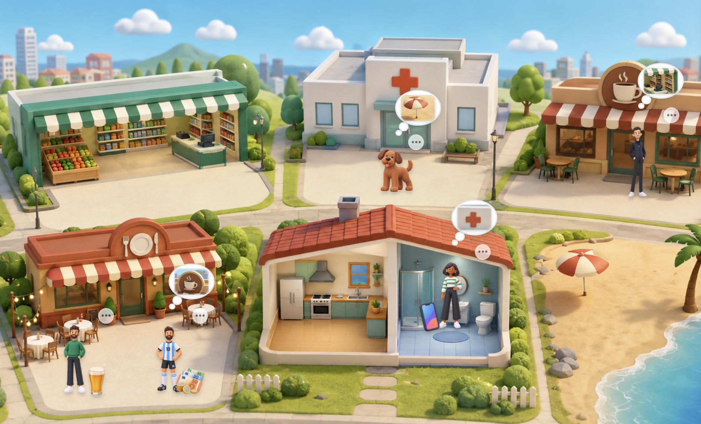

看图练习
看图片，完成几个很短的小练习。

今天的小练习
听问题，然后点图片里的答案。
1 / 3
看问题，把答案里的空格补出来。
大小写、重音和标点都不算错。
1 / 4
听句子，判断对不对。答错了可以继续试。
看图写两句话。不自动判断语法，原句会放进学习记录。
___ está en ___
___ quiere ir a/al ___
问 Adrià 一个关于图片的问题，然后录下来。
可以用：谁？ / 在哪里？ / 想不想…？
录好以后可以听一遍，再发给老师。